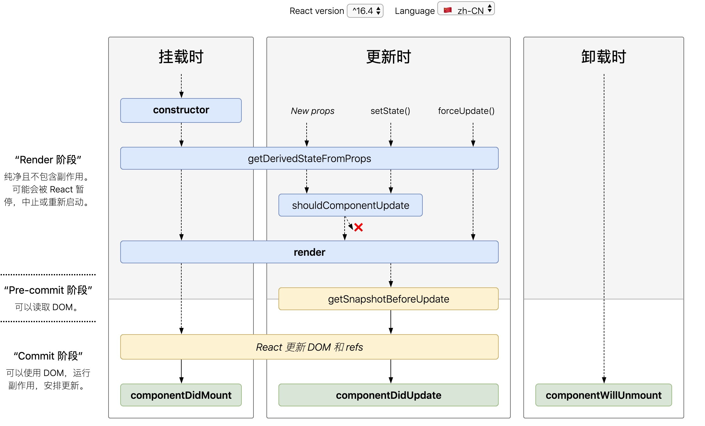

8月份入职新公司，刚入职就参与了一个迭代频繁的项目，也开始真正使用 React 做业务项目。接手的一个模块需要处理深层数据，在这过程中也爬了很多坑，终于搞明白了 React 的数据更新机制。在此做一个总结。
React 渲染
最开始熟悉项目的时候发现，在组件 render 函数的地方打印 console.log，会打印很多次，也就是一个组件会调用很多次 render，这样肯定会频繁的触发 React 的 diff 比较进行 patch 更新，这就很奇怪了，因为 Vue 里，render 函数只有在初始化和依赖的数据发生变化时才会触发，难道 React 有什么不同？于是开始研究 React 的渲染机制，什么时候会进行 render 呢？来一张官网的生命周期图。

可以看到，除了第一次挂载会初始化进行一次渲染外，在 props 或 state 有任何一个改变时，会根据 shouldComponentUpdate 值来判断是否进行 render，普通的 component 的 shouldComponentUpdate 默认会返回 true ，可以通过手写 shouldComponentUpdate 判断是否真正需要重新渲染来提高性能，也可以通过继承 React.PureComponent 来实现，PureComponent 内部进行浅比较（shallowEqual），比较前后两次 state 和 props 是否相等（如果是值类型，就进行值比较，引用类型比较地址是否相同），如果相等就不去更新。 这就会引入一个问题：
1 | class ListOfWords extends React.PureComponent { |
点击按钮时，会通过 push 方法添加一个单词，words 的引用地址没变，而 PureComponent 会进行浅比较，shoulComponentUpdate 会返回 false ， 所以 ListOfWords 不会被重新渲染，这就是可变数据带来的问题。
不可变数据
所以避免该问题的方式就是使用不可变数据，不可变数据就是一旦对象创建就不可再修改，当需要改变时不可直接修改状态，需要通过生成一个新对象的方式来修改。
上面例子的的解决方式就是不去直接修改 props 或者 state，而是通过生成新的引用来替换
- 原生写法
Object.assign()、concat等 - ES6 扩展运算符
上述两种方法是处理简单对象常用的方式，Object.assign 和 对象扩展运算符 都是对对象做了一个浅拷贝，所以如果在深层嵌套对象里，要去改变嵌套对象里面的值，使用上述两种方式并达不到预期的效果，借用 这个例子 来看(一定要点开看啊！)
1 | state = { |
user 是个深层对象，需要改变 modified 的值，对 user 的引用有三种组件，分别是 A 组件(React.Component)、B 组件(React.PureComponent)、C组件(React.Component，里面嵌套了Address 组件(React.PureComponent))。对 modified 的修改分别采用三种方式，看对应的渲染情况。
- Mutate 直接修改
1 | mutate = () => { |
- A 组件：因为 shouldComponent 都会返回 true，会重新渲染。
- B 组件：因为 user 的引用地址没有变化, B 组件使用 PureComponent，会进行浅比较，所以B组件不会重新渲染。
- C 组件：同 A 组件会重新渲染，但是因为 address 的引用地址没变, Address 组件使用的 PureComponent, 所以 Address 不会重新渲染。
- Shallow 浅拷贝
1 | shallow = () => { |
- A 组件：重新渲染。
- B 组件：重新渲染。
- C 组件：同 A 组件会重新渲染，但是因为 address 的引用地址没变, Address 组件使用的 PureComponent, 所以 Address 不会重新渲染。
- Deep 深拷贝
1 | deep = () => { |
- A 组件：重新渲染。
- B 组件：重新渲染。
- C 组件：重新渲染，子组件 Address 因为 address 引用地址改变也会重新渲染。
不提倡使用深拷贝的方式，他的代价是昂贵的，并且深拷贝会导致 React 进行不必要的渲染，因为嵌套的每个对象引用地址都改变了，引用这些数据的组件全部都会重新渲染。对于深层对象的处理，我们要做的只是拷贝已经改变的对象。有一些库例如 immutability-helper、immer、immutable-js 等都可以实现不可变数据结构。
immutable.js
immutable.js 是 Facebook 推出的能让开发者建立不可变数据的函数库，内部实现了一套完整的持久化数据结构，也就是说，对数据的所有的更新操作最后都会生成一个新的数据结构，原有结构保持不变，这也意味着所有的数据都是不可变的，有了这个限制前提，更新操作就有了很多优化的空间，例如更新一个深层节点的数据， Immutable 的实现原理如下

当需要更新某个节点数据时，只需要顺着链路更新分支上的节点，尽可能的复用现有的节点，这样既提升了性能，也降低了内存开销，immutable 的这个特点也称为结构共享。
其他
除了上面说的渲染性能优化，因为 Redux 设计是以几个原则为优先的：状态可追踪，可重复，可维护，不可变数据也是 Redux 运行的基础，因为有了不可变数据，当 store 发生变化时，任何时候都能记录变化之前和变化之后的状态，方便计算 diff，平时开发调试用的 chrome 插件就是利用了此机制进行追踪。
扁平化
在项目开发中，我们应该尽可能的减少使用深层数据结构，尽量将 store 组织的扁平化和范式化，扁平化的意思是：只要不存在“实体下面再挂实体”的现象，应该就可以认为是扁平。
React 与 Vue 在渲染上的不同
- React 和 Redux 都提倡不可变性，更新需要维持不可变原则，Vue 不需要。
- React 应用需要考虑优化机制，当某个组件发生变化时，会以该组件为根，重新渲染整个组件子树，所以需要尽可能的使用 PureComponent 和 shouldComponentUpdate 方法，同时使用不可变数据结构来使的组件更容易被优化。
- Vue 采用依赖追踪机制，能精确的知道哪些组件需要重新渲染，不会存在过渡重渲染的性能问题，默认就是优化状态。
React 渲染功能依赖 jsx，Vue 支持 jsx，但更多的使用 template 模板，这两个在性能上也有点区别，jsx 属于动态渲染，所有的 DOM 节点都是动态生成的，所以页面节点越多，DOM开销就会越大，并且无法根据初始状态进行优化，template在初始编译时，会根据节点类型找出静态节点并进行标记，数据变化时可以跳过这些静态节点的对比，避免进行无意义的 diff。